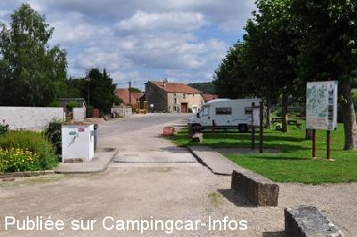
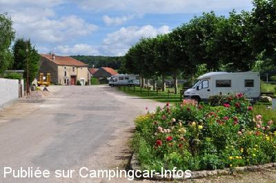
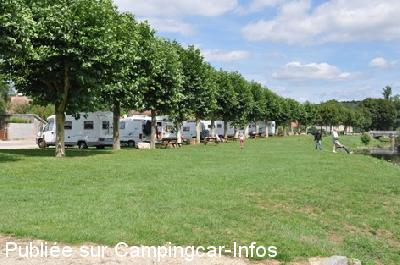

ASN = Aire de services avec stationnement nuit possible de :
GONCOURT
(N° 177)
Accès/adresse :
Rue des Lottes
Place de la Meuse
52150 GONCOURT
Place de la Meuse
52150 GONCOURT
Latitude : (Nord) 48.23685° Décimaux ou 48° 14′ 12′′
Longitude : (Est) 5.60998° Décimaux ou 5° 36′ 35′′
Tarif : 2016
Services, nuitée : 3 €
A déposer dans une petite boite
Type de borne : Artisanale
Services :


Tous commerces
Autres informations :
Aire ombragée au bord de l'eau
Stationnement limité 48 h
Tel : +33(0)325 010 232

Le 10/09/2010 par Plexat (nouveau situation Goncourt)

Le 10/09/2010 par Plexat (nouveau situation Goncourt)

Le 10/09/2010 par Plexat (nouveau situation Goncourt)
de
denis57
le 15/04/2016 :
Bonjour, nous avons dormi sur cette aire ce 10 avril 2016. Aire agréable et très calme au bord de la Meuse mais en zone inondable. Donc méfiance en période de fortes crues. Par contre, pas de réseau téléphonique donc pas d"Internet non plus. Un panneau indique une zone wifi sur l"aire mais aucune indication d"accès. Le tarif est de 3€ la nuitée ou/et les services. Merci à la commune.
Bonjour, nous avons dormi sur cette aire ce 10 avril 2016. Aire agréable et très calme au bord de la Meuse mais en zone inondable. Donc méfiance en période de fortes crues. Par contre, pas de réseau téléphonique donc pas d"Internet non plus. Un panneau indique une zone wifi sur l"aire mais aucune indication d"accès. Le tarif est de 3€ la nuitée ou/et les services. Merci à la commune.
de
jean-marc le belge
le 04/10/2014 :
très bel endroit le long de la rivière avec des bancs pour le pique-nique mais stationnement maximum 24 heures
très bel endroit le long de la rivière avec des bancs pour le pique-nique mais stationnement maximum 24 heures
de
migalec
le 09/10/2012 :
Une nuit passée en toute tranquillité le 29 septembre 2012, en compagnie de cinq autres ccars.
Une nuit passée en toute tranquillité le 29 septembre 2012, en compagnie de cinq autres ccars.
de
camperfever
le 21/05/2012 :
§
De passage en mai pour une nuit qui fut très calme, je confirme que l'aire est toujours aussi agréable, une petite place avec un point information tourisme est en train d'ouvrir près de l'aire.
La tirelire pour récolter les 2€ n'est pas très visible et c'est dommage.
§
De passage en mai pour une nuit qui fut très calme, je confirme que l'aire est toujours aussi agréable, une petite place avec un point information tourisme est en train d'ouvrir près de l'aire.
La tirelire pour récolter les 2€ n'est pas très visible et c'est dommage.
de
McROY
le 13/08/2011 :
De passage le 12 août nous avons pu constater, comme écrit précedement, de la qualité de cette aire, merci
beaucoup à cette petite commune.
Une boite tirelire et placée sur la borne pour collecter une participation de 2€ pour les services et la nuitée, au bruit sourd de ma piéce tombant au fond de la caissette j'en ai déduit que peu de pièces y étaient déposées!!
De passage le 12 août nous avons pu constater, comme écrit précedement, de la qualité de cette aire, merci
beaucoup à cette petite commune.
Une boite tirelire et placée sur la borne pour collecter une participation de 2€ pour les services et la nuitée, au bruit sourd de ma piéce tombant au fond de la caissette j'en ai déduit que peu de pièces y étaient déposées!!
de
Plexat
le 10/09/2010 :
Wij waren hier op 19 augustus 2010. De situatie is hier veranderd. De grote stenen die langs de weg lagen zijn naar achteren gelegd en er zijn paaltjes langs de weg gezet. De bedoeling is dat je nu tussen de paaltjes, dus dwars op de weg parkeert. Zo kunnen er veel meer campers staan en heeft toch iedereen voldoende ruimte. Het blijft een mooie, rustige plaats om te overnachten of wat bij te komen. Nog steeds wordt er een vrijwillige bijdrage van 2 euro gevraagd. Als je ziet wat de gemeente daarvoor doet aan de camperplaats, is dat het zeker wel waard! Hulde aan de gemeente Goncourt!
Wij waren hier op 19 augustus 2010. De situatie is hier veranderd. De grote stenen die langs de weg lagen zijn naar achteren gelegd en er zijn paaltjes langs de weg gezet. De bedoeling is dat je nu tussen de paaltjes, dus dwars op de weg parkeert. Zo kunnen er veel meer campers staan en heeft toch iedereen voldoende ruimte. Het blijft een mooie, rustige plaats om te overnachten of wat bij te komen. Nog steeds wordt er een vrijwillige bijdrage van 2 euro gevraagd. Als je ziet wat de gemeente daarvoor doet aan de camperplaats, is dat het zeker wel waard! Hulde aan de gemeente Goncourt!
de
Pascal
le 19/02/2010 :
De passage début février. Endroit calme où nous avons déjeuné. La borne de services était ce jour là inactive... l'hiver en était sans doute la cause. Endroit à découvrir quand le temps le permet.
De passage début février. Endroit calme où nous avons déjeuné. La borne de services était ce jour là inactive... l'hiver en était sans doute la cause. Endroit à découvrir quand le temps le permet.
de
clotilde
le 11/05/2009 :
Aire calme, j'y vais régulièrement. Vente oeufs fermiers et parfois fromage blanc : maison en face de l'aire, juste à coté du panneau sens interdit (seule maison face à la rivière, en plus les personnes sont très agréables !)!
Aire calme, j'y vais régulièrement. Vente oeufs fermiers et parfois fromage blanc : maison en face de l'aire, juste à coté du panneau sens interdit (seule maison face à la rivière, en plus les personnes sont très agréables !)!
de
gerard.
le 07/05/2009 :
Voilà une aire qui donnerait l'exemple à certaines villes ou villages. C'est champêtre, tarif "léger", calme. Bravo à la municipalité!
Voilà une aire qui donnerait l'exemple à certaines villes ou villages. C'est champêtre, tarif "léger", calme. Bravo à la municipalité!
de
Elze Lammerts
le 11/12/2008 :
Op de terugweg hebben we hier een nacht gestaan.
Geen brood de andere ochtend.........3 november.
Een rustige plaats, met wandel route.
Een plaats om op de heenreis aan te doen en met mooi weer de omgeving leren kennen.
Op de terugweg hebben we hier een nacht gestaan.
Geen brood de andere ochtend.........3 november.
Een rustige plaats, met wandel route.
Een plaats om op de heenreis aan te doen en met mooi weer de omgeving leren kennen.
de
eifelfan
le 13/07/2008 :
very nice place. A good stop on our way to the south. In the morning a baker offers baguette.
We will stay there again.
Many thanks
very nice place. A good stop on our way to the south. In the morning a baker offers baguette.
We will stay there again.
Many thanks
de
SZYMANSKI Francis
le 08/03/2008 :
De passage en août 2007, aire calme et particulièrement agréable.
De passage en août 2007, aire calme et particulièrement agréable.